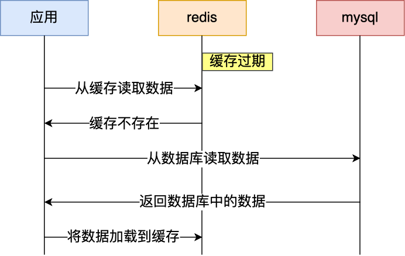

Redis：（三）缓存设计
缓存雪崩
通常我们为了保证缓存中的数据与数据库中的数据一致性，会给 Redis 里的数据设置过期时间，当缓存数据过期后，用户访问的数据如果不在缓存里，业务系统需要重新生成缓存，因此就会访问数据库，并将数据更新到 Redis 里，这样后续请求都可以直接命中缓存。

那么，当大量缓存数据在同一时间过期（失效）时，如果此时有大量的用户请求，都无法在 Redis 中处理，于是全部请求都直接访问数据库，从而导致数据库的压力骤增，严重的会造成数据库宕机，从而形成一系列连锁反应，造成整个系统崩溃，这就是缓存雪崩的问题。
对于缓存雪崩问题，我们可以采用两种方案解决。
- 将缓存失效时间随机打散： 我们可以在原有的失效时间基础上增加一个随机值（比如 1 到 10 分钟）这样每个缓存的过期时间都不重复了，也就降低了缓存集体失效的概率。
- 设置缓存不过期： 我们可以通过后台服务来更新缓存数据，从而避免因为缓存失效造成的缓存雪崩，也可以在一定程度上避免缓存并发问题。
缓存击穿
我们的业务通常会有几个数据会被频繁地访问，比如秒杀活动，这类被频地访问的数据被称为热点数据。
如果缓存中的某个热点数据过期了，此时大量的请求访问了该热点数据，就无法从缓存中读取，直接访问数据库，数据库很容易就被高并发的请求冲垮，这就是缓存击穿的问题。
可以发现缓存击穿跟缓存雪崩很相似，你可以认为缓存击穿是缓存雪崩的一个子集。 应对缓存击穿可以采取前面说到两种方案：
- 互斥锁方案（Redis 中使用 setNX 方法设置一个状态位，表示这是一种锁定状态），保证同一时间只有一个业务线程请求缓存，未能获取互斥锁的请求，要么等待锁释放后重新读取缓存，要么就返回空值或者默认值。
- 不给热点数据设置过期时间，由后台异步更新缓存，或者在热点数据准备要过期前，提前通知后台线程更新缓存以及重新设置过期时间；
缓存穿透
Redis的缓存穿透问题是一个在缓存应用中常见的性能问题，具体指的是用户请求的数据在缓存中不存在，且在数据库中也不存在。由于缓存未命中，这些请求会绕过缓存直接访问数据库，导致数据库压力骤增，甚至可能引发系统崩溃。
假设在一个电商系统中，用户通过商品ID来查询商品信息。这个系统使用了Redis作为缓存层，MySQL作为数据存储层。正常情况下，用户请求商品信息时，系统会首先在Redis中查找，如果找到则直接返回结果；如果Redis中没有找到，则去MySQL中查询，并将查询结果缓存到Redis中以便后续使用。
然而，如果攻击者知道某些商品ID在数据库中并不存在（比如通过扫描商品ID范围或使用非法参数），他们就可以大量发送这些不存在的商品ID的查询请求。由于这些请求在Redis中找不到对应的数据，它们会全部打到MySQL上。如果这类请求的数量非常庞大，就会给MySQL带来巨大的压力，甚至可能导致MySQL崩溃，从而影响整个系统的正常运行。
缓存穿透的发生一般有这两种情况：
- 业务误操作，缓存中的数据和数据库中的数据都被误删除了，所以导致缓存和数据库中都没有数据；
- 黑客恶意攻击，故意大量访问某些读取不存在数据的业务；
应对缓存穿透的方案，常见的方案有三种。
非法请求的限制：当有大量恶意请求访问不存在的数据的时候，也会发生缓存穿透，因此在 API 入口处我们要判断求请求参数是否合理，请求参数是否含有非法值、请求字段是否存在，如果判断出是恶意请求就直接返回错误，避免进一步访问缓存和数据库。
设置空值或者默认值：当我们线上业务发现缓存穿透的现象时，可以针对查询的数据，在缓存中设置一个空值或者默认值，这样后续请求就可以从缓存中读取到空值或者默认值，返回给应用，而不会继续查询数据库。
使用布隆过滤器快速判断数据是否存在，避免通过查询数据库来判断数据是否存在：我们可以在写入数据库数据时，使用布隆过滤器做个标记，然后在用户请求到来时，业务线程确认缓存失效后，可以通过查询布隆过滤器快速判断数据是否存在，如果不存在，就不用通过查询数据库来判断数据是否存在，即使发生了缓存穿透，大量请求只会查询 Redis 和布隆过滤器，而不会查询数据库，保证了数据库能正常运行，Redis 自身也是支持布隆过滤器的。
布隆过滤器是一种概率型数据结构，用于判断一个元素是否在一个集合中。虽然它存在一定的误判率，但可以有效地减少不必要的数据库查询。在查询Redis之前，先使用布隆过滤器判断请求的商品ID是否存在，如果不存在则直接返回，不再查询数据库。